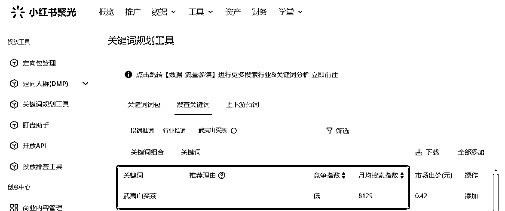

来源：https://qxgrvnd4nbk.feishu.cn/docx/PRuSdcXRjoSYtAxNyDrc5IQBncf
各位圈友大家好，我是更绪，00后，深耕小红书平台，擅长通过内容+投放获取客资、销售产品和快速跑通各种副业项目的0-1。
2024年一整年，自己的业务在小红书平台吃了不少搜索流量，真的有被爽到。
前段时间看完小红书的will商业大会，其中也反复提到“小红书搜索”相关的话题，一直想着写篇复盘贴，拖到现在才写出来。
本文将结合小红书will商业大会的信息，小红书公布的一些数据，结合自己的业务，以及对其它行业的观察，深入探讨关于2025年小红书的搜索流量。有理论，有案例，有实操，还有对未来的展望，希望对你有所帮助！
本文目录如下：
从数量上看，2024年第四季度，小红书的日均搜索量（qv）达到6亿次，同比去年增长近一倍，增速真的惊人！
从占比上看，小红书的搜索流量占全平台所有流量渠道的65%，换句话来说，小红书每产生100个小眼睛，其中65个小眼睛都是用户通过搜索后，再浏览笔记产生的。
从用户心智上看，小红书被不少人称为“新版百度”，就像下面这些图片所展示的，这绝对不是玩梗，小红书的用户已经养成了非常强烈的搜索习惯！
“我的小眼睛为什么这么少？是不是被限流了？”
上面这句话，至少有1000个人对我说过，他们在这里所纠结的小眼睛数，全都是纠结的占比少推荐流量，为什么呢？因为大多数人的思想都是固化的，他们反复纠结平台给不给推流，他们根本没有意识到小红书还有搜索流量，更不知道搜索流量居然还有这么大的量！
“平台不给我自然流了，我这个号彻底没有自然流了”
一位朋友说他账号没流量，然后我让他看看流量分布，如下图所示。
真的让我感到极度诧异，他的搜索流量占比超过90%，他觉得自己没有推荐流量，觉得账号废了，没有自然流了。
真还有不少人觉得只有平台推荐的流量才算是有流量，甚至他们觉得只有推荐流量才算自然流，这绝对不是个例，有很多人的思维是固化了的，他们对搜索流量没有任何清晰的认知！
小红书的搜索流量数量巨大、占比极高、用户心智已经养成，但是创作者的创作心智尚不成熟，这就是供需不平衡的地方，妥妥的流量洼地。
我在今年9月写的精华帖👉
这里说的“蓝海搜索需求”，并非是某个蓝海的虚拟产品，也非某个蓝海的类目，而是指的“搜索流量”这个赛道是蓝海，有巨大的需求，但却没有太大的竞争。
你是否经历过，自己很久之前发布的一篇小红书笔记，过了很长一段时间后，还时不时有人点赞、收藏、评论，甚至是私信咨询？
这就是搜索流量的长尾性，你的1篇笔记可以是这样，你的100篇，1000篇笔记都可以是这样，持续不断给你带来客资，而你，什么都不需要做！
近两年，在小红书卖虚拟资料是非常火热的一个项目，我自己也在做，并且就是从这个项目，感受到了小红书搜索流量的强大魅力。
用数据说话：
下面是我经营的3家虚拟资料的店铺，店铺的访客来源，几乎全都是通过搜索看到我的笔记，然后被笔记种草，从而通过笔记左下角挂的商品链接购买商品。
而这几家店，在好几个月前就已经没有发过笔记，全都是以前的笔记，被用户搜索到产生的搜索流量。虚拟资料电商可以是这样，其它任何类目的电商都可以是这样。
这就是小红书搜索流量的强大之处！
来看个案例
武夷山这边线下的茶叶店获客，下面是我在小红书搜索“武夷山买茶”后展示的结果。
大家注意，排名第一的这篇笔记，右下角没有“赞助”字样，说明我的这次搜索是自然流，并且他是24年8月份发布的笔记，已经有好几个月的时间了。
如果来武夷山旅游的游客，想要找个茶叶店买点茶当伴手礼带走，看看这个搜索竞争指数，如果到了旅游旺季，他的这篇笔记能给线下店里带来多少客人？

不止茶叶店，所有的本地生活都一个思路，可以是茶叶店，也可以是餐饮店，可以是网吧，还可以是酒店！
搜索流量是特别适合高客单的一个渠道，早在前两年，就有在抖音做SEO去获取房地产、医美等高客单类目的客资的玩法。
底层逻辑是什么？
用户的搜索行为背后对应着相对明确的需求，所以转化率会高很多，甚至有一种说法，1个搜索流量=30个推荐流量，听上去有点夸张，但是从转化率和客单价值来说，毫不夸张。
下面是一些行业的获客案例：
很多排名靠前的笔记，右下角没有“赞助”两个字，说明我的这次搜索看到他们，是免费流，并且这些笔记的发布都有一段时间了，在很长一段时间，这些笔记都在持续获取精准的搜索流量。
但是我们却不需要做太多事情，流量都是自己找过来的！
不止小红书平台，所有UGC平台的搜索排名，一定是由“用户满意度”所决定，其实和推荐算法一个逻辑，你的笔记能否获取更大的曝光，归根结底是由平台大量的用户决定。
对于搜索算法来说，用户满意度由三个因素决定——相关性、内容质量、时效性
像上面图中这些例子，虽然词对得上，但是也不能被判断为高相关性。
找到用户会搜的关键词，把它们提前布局在笔记的图片、标题、文案、标签当中。
找长尾词最简单，也是最有效的地方，就是小红书的搜索栏
举个例子：
比如我们要准备卖润德执业药师的虚拟资料，那我们就在小红书的搜索栏输入润德执业药师，后面出现的这些长尾词，穿插在我们的标题、文案的开头中间结尾、标签，就完成好了笔记的关键词布局。
内容质量不仅仅代表要把笔记做得好看
但是“内容质量”，平台在不同发展阶段的业务侧重点不一样，在平台发展的前中期，可能更多以用户的行为数据为侧重点来评判“内容质量”，主要看用户的点赞、收藏、评论、关注等数据，这些数据好，你的“内容质量”就高。
如果平台发展成熟了，正在往商业化转变，例如电商层面，可能就会以GMV、商品的点击转化率、千次曝光成交金额等数据来作为评判标准。
个人判断，小红书正往后者转变，因为前不久小红书将其商业、社区和电商的算法部门整合为一个新的部门——应用算法部，结合小红书近段时间在电商板块的大动作，所有我推测后续应该会向电商数据倾斜。
如何告诉平台我的内容质量高？
可以通过投放去加速获取数据，不然等自然流跑太慢了，只要投放能保本，我们就疯狂投就行了，给平台大量的数据，告诉平台我的笔记质量过关。
可以把这个投放操作理解成，免费的薯条，保本不亏钱，笔记的排名涨上去，我们吃后续大量的长尾搜索流量。
平台不会让老笔记一直霸占大量搜索流量，这对平台的内容生态是极其不利的，所以我们也无需担心自己的业务赛道有笔记数据很好，自己就再也拿不到搜索流量。
针对这个点，我们可以做的操作是，一段时间后，把原来的老笔记重新编辑，略微修改一下，然后重新发布，去把笔记的时效性这个因素解决掉。
其它平台，搜索一个关键词，出来的内容不一定是完整匹配这个关键词，可能是并没有这个关键词，但是数据很好的内容，但是它和搜索词会有一定的关联度。可以看看下图，在抖音搜索“润德执业药师资料分享”，排名比较靠前的视频，400多个点赞，但是它是分享选资料心得，并不是分享资料资源。

小红书现在的搜索，还是比较原始的“精确搜索”，也就是说，你搜索出来的笔记，和你搜索的关键词是高度匹配的。其实这对我们非常友好，因为可以排除掉很多笔记数据很好，但是没有做关键词布局，没有做SEO的笔记，少了很多的竞争！同样在小红书搜索“润德执业药师资料分享”，出来的笔记都是分享资料资源的。
小红书算法原来核心考量的是社区指标，2025年及以后，很有可能会基于商业化和电商的需求迭代算法，算法的变化则代表流量的重新分配和洗盘。
但这并不意味我们能拿到的流量更少了，无非就是影响算法的数据指标变了，原来是做好笔记的点赞、收藏、评论我们能拿到更多的流量。
以后做好笔记的点转、千次曝光成交等数据，我们一样能拿到更多的流量，侧重点变了而已。
小红书will商业大会给到的数据，2025年小红书的日均搜索数（qv）会从6亿次，增长到10亿左右，这是属于我们的机会。
小红书最近在推一款APP——点点，不知道是小红书投资的还是内部孵化的产品，是一款AI搜索工具，数据是小红书平台的数据。
平台都在重点发力这一块，圈友们，干起来，真的是个好机会！
写到这儿也就差不多了，希望对你有帮助呀～
可以的话，帮我点个赞，谢谢你的鼓励！